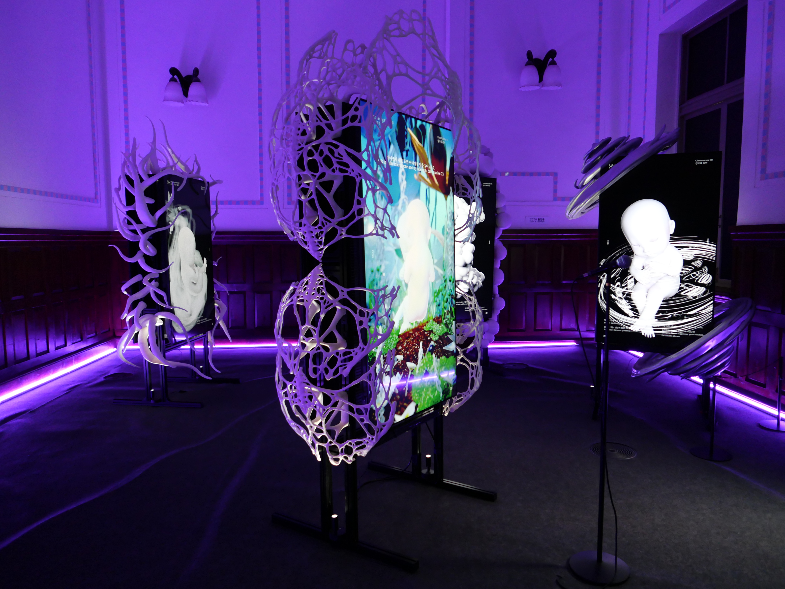

Artwork
Dreaming Babiess: illi
Dreaming Babies: illi addresses humanity’s desire to create a perfect being through genetic technologies: the commercializing of fertility treatment, the advancements in the science of cloning, the many possibilities and uncertainties of future human birth, and the ethical dilemmas surrounding genetic modification. Each simulated baby’s story, generated from real genetic data, is created in collaboration with artificial intelligence. Visitors interact with the sleeping babies in real time by inputting sound through a microphone, connecting with them via the ChatGPT system. The live-rendered videos of babies floating in space can be viewed on each screen, where audiences can observe how genetic anomalies are reimagined not as physical difficulties, but as representations of more unique and special forms of humanity. After experiencing egg retrieval and Preimplantation Genetic Testing (PGT), the artist went through the process of selecting embryos through genetic testing—freezing only those that passed as “normal,” while discarding those that did not. But what exactly defines an embryo with “normal” genes, and should embryos with “abnormal” genes be discarded? This AI-based installation reinterprets the genome not as an object of pathology, but as a site of imagination and mythology. Each chromosome—often associated with genetic disorders or congenital conditions—is reborn as a baby character with a name, an alter ego, and an imagined being, endowed not with deficiency but with a poetic and abstract superpower. Rather than treating disability and genetic difference as deficiencies, it reimagines them as distinct ways of being. Within this new mythology, the boundaries between the “normal” and the “abnormal” begin to dissolve, allowing difference to emerge as a generative force—one that creates new creative identities, perspectives, and forms of beauty.

Dreaming Babies: illi, 2025, Yoon Chung Han, an exhibition view of Unfold X exhibition, Seoul, S.Korea.